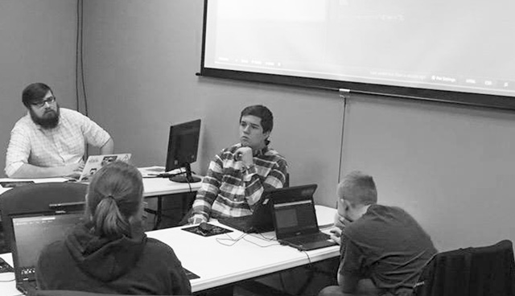
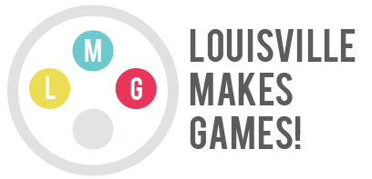

I am a Game Developer, UX/UI Designer, and JavaScript Developer with a passion for when art and technology work together for a purpose.
I believe that design is much more than a coat of paint. Design and user experience must create a seamless flow from the creator to the user in order to clearly convey the intended message.
I am a web & game developer and advocate. I organize meetups, create events, and help direct a non-profit to promote and advance the Louisville tech scene and ensure viable and relevant technology careers in our city.
I believe that technology, but more specifically code literacy, is hugely important to our collective future and I strive to help further programming education in Louisville.
Please take some time to read about my experience and feel free to contact me with any questions.
To keep my skills current and to sustain my passion for designing and programming, my business partner and I develop HTML5/JavaScript games. In doing this I am able to combine my passion for art and technology to create games for all to enjoy. We have currently completed ten game projects, three of which are on the iOS app store. We also take on contract game development work for businesses and organizations.
I started my career at cafepress on a small labs team focused on creating new and exciting products and the web experiences to get those products in front of customers. Since then I have moved to the front end team on the main cafepress website, where I manage pages seen by tens of thousands of users a day. I primarily work in JavaScript, HTML and CSS.
I designed and developed internal use web apps and internal/external websites. While I specialized in the design and UI/UX of each project, I also gained a lot of useful experience with C# and SQL. I was the UX watchdog on the team, and fought for the users in any way I could.
I worked one-on-one with clients to bring their vision and purpose to life on each custom website. To do this I worked to balance the end user’s needs and the client’s requests.
Local Louisville non-profit organization called Louisville Makes Games! The goal of LMG is to provide educational courses and promote game development careers in the city of Louisville, KY.
The independent game developer community in Louisville is a huge passion of mine. Game Dev Lou is a twice-monthly meetup and support group for local game developers. I have facilitated nearly every meeting, and to date I have helped to organize seven game jams (think hack-a-thons).
In order to grow and challenge myself as a developer I have started and sustained JSLou, a local group focused on all things JavaScript. I have learned a great deal from the many experienced developers I have met through JSLou. I enjoy facilitating an environment where others can learn and expand their skills.
I have been given the opportunity along with my Two Scoop Games partner Eric to speak at venues in both Lexington and Louisville about game development. Most recently at Code PaLOUsa 2015 we had the privilege of running a half-day workshop where we taught participants to create a game using HTML5 and JavaScript.
In 2014 I began teaching a monthly game development workshop at Velocity Indiana, a co-working space, for youth ages 11-18 as part of their code education program.
In summer 2015 I helped to found the local non-profit 'Louisville Makes Games, Inc.'. As a director of LMG I strive to continue the momentum of Louisville's growing game development career opportunities.